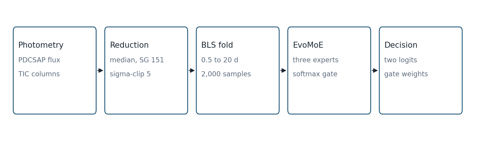
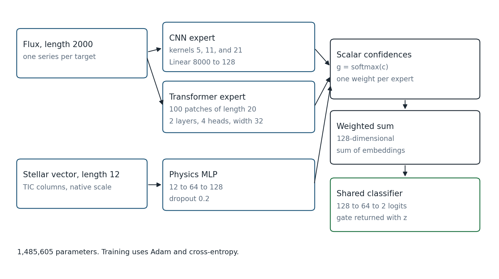
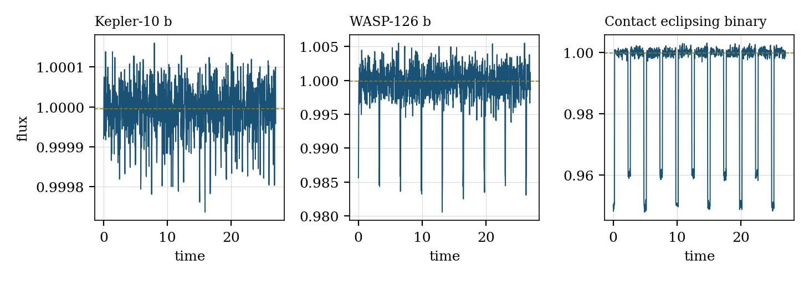
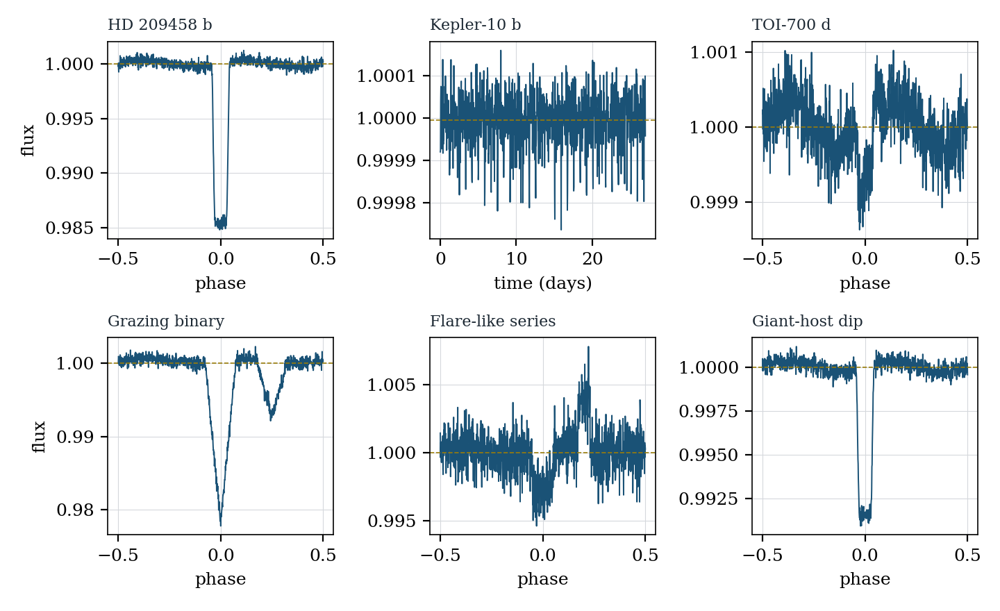
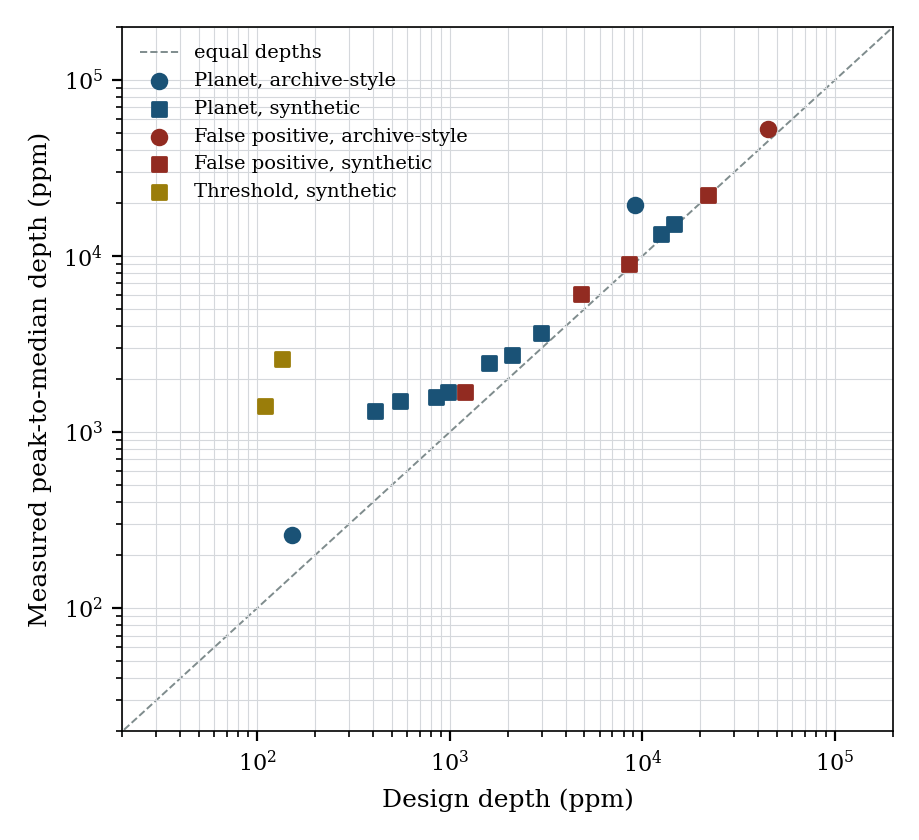
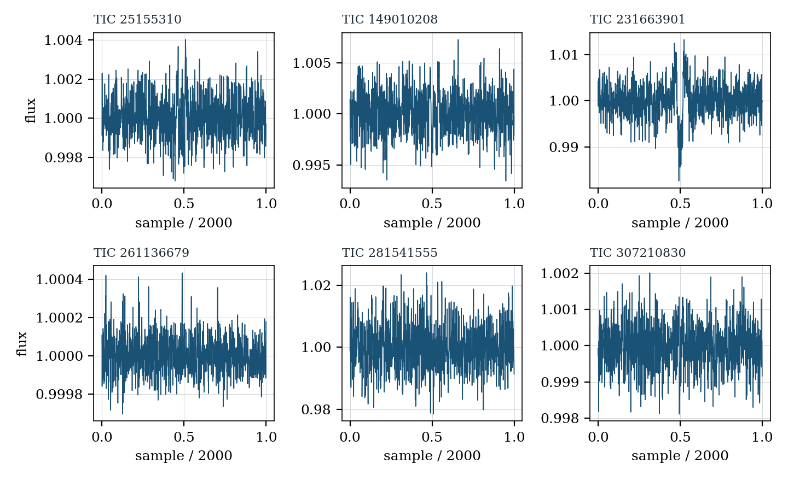
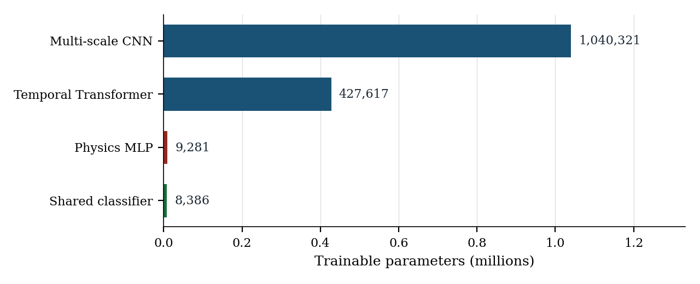

Methods article
AstroVerse: a mixture-of-experts architecture for interpretable photometric transit vetting
aDepartment of Computer Engineering and Technology, MIT World Peace University, Pune, India
Abstract. Transit surveys return many more periodic dimmings than a follow-up program can observe. A single classifier score does not tell the observer whether the decision was carried by the shape of the dip, by its repetition, or by the radius of the star. We describe AstroVerse, an open photometric-vetting system, and EvoMoE, the network at its center. EvoMoE reads a flux series of 2,000 samples together with twelve stellar quantities from the TESS Input Catalog. A multi-scale convolutional expert, a temporal transformer, and a physics multilayer perceptron each return a 128-dimensional embedding and a scalar confidence. A softmax over the three confidences weights the embeddings, and a shared classifier maps that weighted sum to a two-class logit. The gate weights leave the forward pass with the logit, so the attribution is computed rather than painted on afterwards. The network contains 1,485,605 trainable parameters. On the CPU used for this study a single target required a median of 7.64 ms. We also specify an 18-series morphological reference library and report the peak-to-median depth and a noise-referenced signal-to-noise ratio for every series. A statistical comparison against published vetters on the TESS Objects of Interest catalog is the measurement this specification is written to support.
Keywords: exoplanets; transit photometry; TESS; mixture of experts; scientific software
Highlights
- Three experts attribute each score to shape, period, and the star.
- The network has 1,485,605 parameters and a 7.64 ms median CPU latency.
- Eighteen reference curves isolate the shapes that confuse vetting.
- The reduction, the BLS fold, and the forward pass are specified for reuse.
1. Introduction
Kepler showed that small planets are common, and it did so by staring at one field long enough for shallow, repeating dips to rise out of the noise [1]. TESS took the opposite bargain. It tiles most of the sky in sectors of about 27 days, with a two-minute cadence on a preselected set of stars and a longer cadence on the full-frame images [2]. The scientific return is a flood of threshold-crossing events. Most of them will never receive a radial-velocity orbit or a high-resolution image. The person who decides which star gets that time is doing triage, and the triage has to be fast enough to keep up with the sectors.
The geometry that makes the triage possible is simple, and the bookkeeping around it is not. To first order a central transit removes a fraction of the stellar light equal to the square of the planet-to-star radius ratio [3]. A one-percent dip on a Sun-like star is a giant planet. The same dip on a mid-M dwarf can be a rocky world. Limb darkening, a non-zero impact parameter, and a blended neighbor all move the observed depth away from that square [4,5]. An eclipsing binary, a grazing stellar companion, a background eclipsing binary inside the aperture, a flare that happens to repeat near the search period, and the oscillatory variability of a giant star can all produce a dip that a period search will flag. The Kepler Robovetter exists because a list of periodic dips is not a list of planets [6].
Deep networks now do a large part of that sorting. AstroNet demonstrated that a convolutional view of the folded Kepler light curve could rank planet candidates at an accuracy its authors reported as 98.8% on their test configuration [8]. Later systems added centroid motion, secondary-eclipse diagnostics, and stellar parameters, and they published their own precision–recall operating points [9–13]. Those numbers are the property of the papers that measured them, on the samples those papers defined. They are also single numbers. A follow-up queue cannot tell, from a score of 0.91 alone, whether the network liked the U-shape, the coherence of the folds, or the fact that the star is small.
AstroVerse is built around that missing sentence. The system reduces a light curve, searches it with the box-least-squares periodogram, folds it to a fixed length, and passes it with a stellar vector into a mixture of three experts. Each expert nominates its own confidence. The confidences become a gate. The gate is returned with the class logit, so a later inspection can say which representation carried the decision. The name of the network is EvoMoE. Training uses Adam and cross-entropy; the implementation is a mixture of experts in the sense of Jacobs et al. [15] and the sparse-gate literature that followed [16], with a gate that is deliberately small.
This paper specifies that system. Section 2 recalls the signals the experts are meant to separate. Section 3 places the design next to the vetters already in the literature. Sections 4–6 give the data path, the forward pass, and the stellar features, at the level a reader needs in order to rerun them. Section 7 measures an 18-series reference library that isolates those signals. Section 8 describes the six TESS light curves currently held in the project cache. Section 9 reports the parameter count and the inference latency. The scope of the study, including the catalog-scale comparison that remains to be published, is stated in Section 11.
2. Transit geometry and the signals that imitate it
A transit is a drop in flux that lasts for a small fraction of the orbit and repeats at the orbital period. For a circular orbit and a dark, spherical planet the duration is set by the stellar density, the period, and the impact parameter [3,5]. The depth, once limb darkening is included, is an integral over the fraction of the stellar disk hidden by the planet [4]. For a quick scale, observers still use
and then argue about the corrections. Equation (1) is enough to see why a stellar radius belongs in the same model as the light curve. A 300 ppm dip on a solar-radius star is an Earth-sized body. The same 300 ppm dip on a star of 10 R☉ is a companion of several Jupiter radii, which is a stellar companion, and the target does not belong in a planet queue.
Shape carries the second half of the argument. A planet that fully enters the stellar disk produces a flat bottom, rounded by limb darkening into a soft U. A grazing binary, in which the two disks never reach a full overlap, produces a V. A contact binary varies all the way around the orbit, so the “out of transit” baseline is itself curved. A background eclipsing binary diluted by the target star can look planetary in depth while keeping the V, or while showing a secondary eclipse at phase 0.5 that a single-planet model does not want. Centroid motion and the contamination ratio in the TESS Input Catalog are the usual witnesses for that case [18]. A flare is localized in time, asymmetric, and usually bright rather than faint; a period search can still lock onto a quasi-periodic active star if the window is short.
The search itself has a window. The box-least-squares periodogram of Kovács, Zucker, and Mazeh tests a grid of periods and a grid of box durations, and it is the right tool when the signal really is a box [7]. It is also happy to return a harmonic. On a 27-day TESS sector a 40-day planet may contribute one transit, and a search that stops at 20 days will not offer that period as a candidate. The convolutional view of the series can still see the dip. The periodogram will talk about something else. A vetter that can show which of those two opinions it trusted is easier to audit than a vetter that returns one score.
None of this is new physics. It is the reason the experts in Section 5 are split the way they are. The convolutional expert sees local shape at several kernel widths. The transformer expert sees the sequence of patches across the folded series, which is where a repeating box and a once-off spike part company. The physics expert sees the stellar vector, including radius, density, and contamination, which is where a giant host and a blended aperture become visible even if the dip itself is tidy.
3. Related work
The operational answer to the false-positive problem, before deep learning, was a rule set. The Kepler Robovetter of the DR25 catalog applies a sequence of vetoes and then publishes both completeness and reliability, so a statistical user can weight a candidate by the chance that a similar signal would have survived [6]. Earlier Kepler catalogs used the same idea with the diagnostics available at the time. The rules are readable. They are also brittle when a new instrument changes the noise, the cadence, or the aperture.
Shallue and Vanderburg replaced a large part of that visual ranking with a convolutional network on the global folded curve and a zoomed view of the transit [8]. The result that paper reports is a ranking accuracy of 98.8% on the test threshold-crossing events they defined. Ansdell and colleagues extended the representation with scientific images of the centroid time series and measured 97.5% accuracy and 98.0% average precision against a reimplementation of AstroNet at 95.8% and 95.5%, with a recall gain of 15–20% in their lowest signal-to-noise bin [9]. Dattilo and colleagues carried a related architecture to K2 [10]. Yu and colleagues split TESS candidates into triage and vetting: they report an average precision of 97.0% and an accuracy of 97.4% for triage, and an average precision of 69.3% with an accuracy of 97.8% for vetting [11]. The gap between those two vetting numbers is a reminder that accuracy on a class-imbalanced sample can look calm while the precision–recall curve is doing the real work.
ExoMiner moved the same idea onto TESS-era diagnostics and reported a recall of 0.936 at a precision of 0.99, with 301 planets in the evaluation its authors describe [12]. Astronet-Triage-v2 reports a recall of 99.6% at a precision of 75.7% on its test set, and an area under the precision–recall curve of 0.965 on held-out extended-mission data [13]. On NGTS, Chaushev and colleagues used a convolutional network and reported an area under the ROC curve of 95.6%, recovering 13 of 14 of their planets [14]. Table 1 collects these operating points as the original papers stated them. AstroVerse does not remeasure them, and this paper does not claim a rank among them.
What those systems return to the user is a score, sometimes with a set of diagnostic inputs that a human can plot. The mixture-of-experts line of work offers a different handle. Jacobs and colleagues trained experts and a gate together so that different experts could take different regions of the input [15]. Shazeer and colleagues showed that a softmax gate over a larger bank of experts can be made sparse [16]. EvoMoE keeps the bank at three, and it asks each expert for a scalar confidence rather than building the gate from a fresh projection of a concatenated vector. The transformer expert uses the encoder of Vaswani et al. [17], at a width small enough that a folded light curve of 2,000 samples stays cheap.
Calibration is a separate question from accuracy. Guo and colleagues showed that modern networks are often over-confident, and that a temperature fitted on a held-out set repairs a useful part of the reliability diagram [23]. A vetting score that will be read as a probability needs that check. It is part of the catalog evaluation named in Section 11, and it is not a number reported here.
| System | What the paper reports | Attribution |
|---|---|---|
| Robovetter, Kepler DR25 [6] | Completeness and reliability of a rule-based catalog | Named vetoes |
| AstroNet [8] | 98.8% ranking accuracy on the authors’ test TCEs | Score |
| Exonet [9] | 97.5% accuracy, 98.0% average precision | Score |
| AstroNet-Vetting [11] | Triage AP 97.0%; vetting AP 69.3% | Score |
| ExoMiner [12] | Recall 0.936 at precision 0.99 | Score, with diagnostic inputs |
| Astronet-Triage-v2 [13] | Recall 99.6% at precision 75.7%; AUPRC 0.965 | Score |
| NGTS CNN [14] | AUC 95.6%; 13 of 14 planets recovered | Score |
| EvoMoE, this work | Architecture, reference-library photometry, latency | Softmax gate over three experts |
4. The AstroVerse system
AstroVerse is a small stack with a single scientific path through it. Photometry is read as a light curve, preferably the PDCSAP flux from the TESS Science Processing Operations Center. Stellar columns are read from the TESS Input Catalog through the MAST catalog service [19,22]. The reduction in Section 6 normalizes, detrends, and clips. A box-least-squares search proposes a period, an epoch, a duration, and a depth. The series is folded on that period and resampled to 2,000 samples. EvoMoE maps the pair (flux, stellar vector) to two logits and three gate weights. Figure 1 is that path.

Around that path sit two pieces of software. A FastAPI service exposes the forward pass at POST /predict, along with routes for a target list, a stored light curve, and a written report. AstroLens, a Next.js client, is the inspection surface: the reference library of Section 7 can be browsed there, and a batch of series can be exported. The repository that holds the model, the service, the client, and the reference series is public (see Data availability).
The service that executes the network and the client that browses the library are intentionally separable. A morphological argument about a series, of the kind made in Section 7, can be had from the flux alone. A statement about which expert carried a decision requires the gate from POST /predict. Keeping those two products distinct is what makes the attribution meaningful once catalog-scale weights are in place.
5. The EvoMoE model
EvoMoE takes a flux vector x ∈ ℝ2000 and a stellar vector u ∈ ℝ12. Three experts each return an embedding in ℝ128 and a scalar confidence. With k indexing the convolutional expert, the transformer, and the physics network,
where the first two experts read x and the third reads u. The gate is a softmax over the three scalars,
and the fused representation is the corresponding weighted sum of embeddings,
A shared head maps h to two logits. The head is a linear map from 128 to 64 units, a ReLU, dropout at rate 0.3 in training, and a linear map from 64 to 2. At inference the dropout is inactive. The call returns the logits and g. Figure 2 draws the same computation.

5.1 Convolutional expert
The convolutional expert looks at the flux at three kernel widths at once: 5, 11, and 21 samples, each with 16 output channels, padding 2, 5, and 10, and a ReLU. The three maps are concatenated along the channel axis to 48 channels. A max-pool of width 4 reduces the length, a convolution from 48 to 64 channels with kernel 5 and a ReLU follows, and a second max-pool of width 4 leaves a length of 2000/16 = 125. Flattening 64 × 125 gives 8,000 units, which a linear map sends to 128. A further linear map from 128 to 1 is the confidence. There is no batch normalization in this expert. Of the 1,040,321 parameters in the block, 1,024,128 sit in the map from 8,000 units to 128. The four convolutions together hold 16,064 parameters, and the confidence head holds 129.
The three kernel widths are a deliberate spread. Five samples see a sharp ingress. Twenty-one samples see the bottom of a longer event. A grazing V and a flat-bottomed U differ in how those scales line up, which is the morphological half of Section 2.
5.2 Transformer expert
The transformer expert cuts the series into patches of length 20, giving 100 tokens. A linear map sends each patch from 20 to 32. Sinusoidal positional encodings of dimension 32, with a maximum length of 100, are added. Two encoder layers follow, each with 4 heads and a feed-forward width of 64. In the installation used here the feed-forward activation is ReLU and the encoder dropout is 0.1, both library defaults of the layer as constructed. The 100 tokens of width 32 are flattened to 3,200 units and mapped linearly to 128, with a confidence head on that embedding. The block holds 427,617 parameters, of which 409,728 are the map out of the flattened sequence and 672 are the patch map. The two encoder layers and the confidence head account for the remaining 17,217.
A width of 32 is small next to the language models that made this layer famous [17]. A folded transit is a smooth one-dimensional signal with one important neighborhood. The capacity is spent on letting patches attend to each other, so that a secondary dip half a period away, or a single spike that refuses to line up, can change the embedding. The implementation flattens the tokens, so the linear map still sees their order.
5.3 Physics expert
The physics expert is a multilayer perceptron on u. A linear map from 12 to 64, a ReLU, and dropout at rate 0.2 feed a linear map from 64 to 128 and a second ReLU. The confidence head is again linear, from 128 to 1. The block holds 9,281 parameters. It never sees the flux. That isolation is the point: if this expert wins the gate on a deep dip around a giant star, the attribution is telling the truth about where the decision came from.
5.4 Ablation mask and training schedule
An expert can be removed from a given forward pass by replacing its confidence with negative infinity before the softmax. The module still allocates that expert’s parameters. An ablation therefore changes the vote and leaves the parameter count at 1,485,605, which is the right behavior when a later study wants the drop in score to be the drop in the vote.
The loss is cross-entropy on the two logits. The optimizer is Adam. The catalog configuration specifies 100 epochs, a batch size of 256, a learning rate of 10−4, a weight decay of 10−5, gradient clipping at 1, a cosine schedule, and seed 42. The period window attached to that configuration is 0.5–20 days, the same window the search uses. Classification metrics from a run of that schedule, on a held-out TESS Objects of Interest sample, are the subject of the follow-on measurement in Section 11. The numbers in Sections 7–9 are properties of the series and of the architecture, and they do not depend on that run.
5.5 Shapes along the forward pass
Table 7 records the tensor shapes a reader will meet in the reference module, for one target. The convolutional branch preserves the sequence length through the first three kernels because the padding is half the kernel width, rounded in the usual way (2, 5, and 10). Only the two pooling stages shorten it, each by a factor of four, which is why the flattened width is exactly 64 × 125. The transformer branch never pools. One hundred patches of twenty samples cover the series exactly, since 100 × 20 = 2,000, and the encoder keeps that token count. The two branches meet only after each has been reduced to 128 dimensions. The physics branch is independent of length: twelve catalog numbers in, 128 numbers out.
The confidence heads do not change those widths. Each is a map from 128 to a single number, applied to its own embedding, and the three numbers are concatenated to a vector of length 3 before the softmax. The shared classifier then reads the fused 128 and writes two logits. The mixture is Equation (4): one weighted sum of the three embeddings, then one shared head.
| Stage | Shape | Notes |
|---|---|---|
| Flux input | 2000 | Folded, linearly resampled |
| Three convolutions | 3 × (16, 2000) | Kernels 5, 11, 21; ReLU |
| Concatenation | (48, 2000) | Along channels |
| Pool, conv, pool | (64, 125) | Two max-pools of width 4 |
| CNN embedding | 128 | From 8,000 flattened units |
| Patches | (100, 20) | No overlap, no remainder |
| Encoder tokens | (100, 32) | Two layers, four heads |
| Transformer embedding | 128 | From 3,200 flattened units |
| Stellar input | 12 | Table 2, native scales |
| Physics embedding | 128 | 12 → 64 → 128 |
| Gate | 3 | Softmax of three confidences |
| Fused embedding | 128 | Weighted sum, Equation (4) |
| Logits | 2 | Shared head, 128 → 64 → 2 |
6. Photometric reduction and stellar features
Given a light curve object, the reduction drops non-finite samples and then chooses a flux column. PDCSAP is used when it is present and not entirely missing. Otherwise the simple aperture photometry is used, and if that too is absent the generic flux column is used. The series is divided by its median. A Savitzky–Golay filter [19] with a window of 151 samples and a polynomial order of 3 estimates the trend; the window shrinks, and is forced to an odd length, when the series is shorter than 151. The detrended flux is the series divided by that trend. Points more than five standard deviations from the center are rejected by an iterative sigma clip with at most five iterations, using the Astropy implementation [22]. Finite samples, the choice of PDCSAP, the median, the filter, and the clip are the whole of the reduction.
The period search builds a BoxLeastSquares periodogram on 10,000 periods spaced uniformly from 0.5 to 20 days and on 10 durations spaced uniformly from 0.01 to 0.2 days [8,23]. The winning period, epoch, and duration are the arguments of the maximum power. Duration is stored in hours by multiplying the day-scale duration by 24. Depth is stored in parts per million by multiplying the fractional depth by 106. A periodogram signal-to-noise ratio is stored as well: the winning power, minus the mean power, divided by the standard deviation of the power. That quantity is a statement about the periodogram. It is not the photometric signal-to-noise ratio used in Section 7, and the two should not be compared as if they were the same measurement.
Folding places the transit at phase zero when the period and epoch are right. With period P and epoch t0,
The folded samples are sorted in phase and linearly interpolated onto 2,000 points spanning the phase range present in the series. A missed period puts the dip in the wrong place, and the convolutional expert then sees a box at the edge or no box at all. That failure mode is one of the reasons the gate exists: a transformer that has lost the fold and a physics expert that still dislikes the stellar radius can disagree in public.
6.1 The twelve stellar columns
The stellar vector is the twelve columns in Table 2, in that order, requested from the TIC by identifier [18]. The loader passes them on the scales the catalog returns. Temperature stays in kelvin, radius in solar units, magnitude in magnitudes. A standardized copy of the same columns is a natural control once catalog-scale training starts; it is not part of the forward pass specified here. The contamination ratio is in the vector because a diluted background eclipsing binary is a depth error as much as it is a shape error. Distance and reddening are present because the TIC publishes them and because a badly constrained host is itself a reason to be careful.
| Index | Column | Role in vetting |
|---|---|---|
| 1 | Tmag | TESS magnitude; a rough proxy for photometric noise |
| 2 | Teff | Effective temperature, in kelvin |
| 3 | logg | Surface gravity; separates dwarfs from giants |
| 4 | rad | Stellar radius, in solar radii; sets the scale of Eq. (1) |
| 5 | mass | Stellar mass, in solar masses |
| 6 | rho | Mean stellar density; tied to transit duration |
| 7 | lum | Luminosity |
| 8 | d | Distance |
| 9 | ebv | Reddening |
| 10 | ra | Right ascension |
| 11 | dec | Declination |
| 12 | contratio | Contamination ratio; dilution from neighbors in the aperture |
7. Morphological reference library
Published vetters are compared on thousands of threshold-crossing events. A reader who wants to know whether a new architecture even sees the difference between a U, a V, and a flare needs a smaller set, built so that each series is about one thing. The AstroVerse reference library has eighteen series, each stored as 2,000 rows of time and flux. Eleven are grouped as planet-like, five as false-positive morphologies, and two as threshold cases. Three series are archive-style light curves spanning roughly a TESS sector in days. Fifteen are synthetic series, generated to isolate one morphological regime and stored in phase from −0.5 to 0.5. Synthetic series of this kind are a normal part of transit work; they are how a method is shown a grazing geometry, or a flare, without waiting for a sector that happens to contain a clean example.
The depth used throughout this section is the peak-to-median depth of the stored flux,
reported in parts per million. It is the depth a person sees when they look at the file. It is not a Mandel–Agol fit [4]. A fitted depth is the right quantity once an ephemeris is trusted. The photometric signal-to-noise ratio is δpeak divided by the standard deviation of the samples at or above the 55th percentile of the flux, so that the noise estimate sits off the bottom of the dip. Table 3 lists every series. A design depth shipped beside some of the files is included so the two definitions can be seen side by side. For the deep events the two depths agree to a few percent. For the two threshold series the stored dip is an order of magnitude deeper than the design field, and a reader who used the design field would misjudge how hard those cases are. Every sentence below uses δpeak.
| Series | Host | Class | Origin | P (d) | Design | Measured | SNR |
|---|---|---|---|---|---|---|---|
| Kepler-10 b | G-type | Planet | Archive-style | 0.84 | 152 | 259 | 8.72 |
| WASP-126 b | G2V | Planet | Archive-style | 3.28 | 9200 | 19578 | 16.78 |
| Contact EB | F-type binary | False positive | Archive-style | 1.12 | 45000 | 52438 | 87.66 |
| TOI-700 d | M2V | Planet | Synthetic | 37.42 | 850 | 1586 | 7.23 |
| TRAPPIST-1 e | M8V | Planet | Synthetic | 6.10 | 550 | 1502 | 6.75 |
| HD 209458 b | G0V | Planet | Synthetic | 3.52 | 14600 | 15246 | 72.45 |
| LHS 3844 b | M5V | Planet | Synthetic | 0.46 | 410 | 1315 | 6.00 |
| K2-18 b | M2.5V | Planet | Synthetic | 32.94 | 2980 | 3664 | 16.65 |
| Grazing binary | A dwarf | False positive | Synthetic | 2.45 | 22000 | 22211 | 60.94 |
| Flare-like | M4Ve | False positive | Synthetic | — | 4800 | 6077 | 4.87 |
| Blended EB | F8V | False positive | Synthetic | 4.18 | 1200 | 1684 | 7.63 |
| Threshold 01 | K1V | Threshold | Synthetic | 8.75 | 135 | 2599 | 5.42 |
| Threshold 02 | G5V | Threshold | Synthetic | 12.30 | 110 | 1417 | 6.49 |
| Ultra-short giant | F7V | Planet | Synthetic | 0.72 | 12500 | 13308 | 60.65 |
| Noisy M dwarf | M3V | Planet | Synthetic | 2.15 | 980 | 1695 | 7.65 |
| Giant-host dip | K2III | False positive | Synthetic | 18.50 | 8500 | 9053 | 43.34 |
| Eccentric candidate | G1V | Planet | Synthetic | 26.40 | 2100 | 2755 | 12.77 |
| Overlapping planets | K0V | Planet | Synthetic | 5.80 | 1600 | 2474 | 7.43 |

7.1 Shallow rocky signals
Kepler-10 b is the hardest archive-style planet in the set. The measured depth is 259 ppm and the photometric signal-to-noise ratio is 8.7. Read with Equation (1) as a central transit of a solar-radius star, 259 ppm is a companion of about 1.8 Earth radii: the square root of 2.59 × 10−4 is 0.016, and 0.016 × 109.2 Earth radii per solar radius is 1.8. That arithmetic is a scale, not a fit to the published planet, and the design field of 152 ppm would have given a smaller body. The series itself is noisy across a run of about 27 days. A vetter that only rewards a clean U will be unsure here, which is the correct mood. LHS 3844 b, TRAPPIST-1 e, and the noisy M-dwarf series live in the same depth neighborhood once they are measured (1,315, 1,502, and 1,695 ppm) with signal-to-noise ratios between 6.0 and 7.7. On an M dwarf those depths can be rocky or water-rich worlds. The physics expert is there so the host radius, not the raw parts per million, decides which.
7.2 Gas giants
WASP-126 b drops by 19,578 ppm, about two percent, at a signal-to-noise ratio of 16.8. Under the same solar-radius reading the companion is about 15 Earth radii, close to 1.4 Jupiter radii. The curve in Figure 3 has the broad U of a giant planet that fully enters the disk. HD 209458 b is cleaner still: 15,246 ppm against a design depth of 14,600, and a signal-to-noise ratio of 72. The ultra-short-period giant, at 0.72 days and 13,308 ppm, is the same morphological family on a shorter orbit, with a signal-to-noise ratio of 61. These are the cases a convolutional expert should find easy, and they are in the library so that “easy” has a picture attached to it.
K2-18 b is deeper than the rocky group and shallower than the hot Jupiters: 3,664 ppm, signal-to-noise ratio 16.7, on an M2.5 dwarf, with a period of 32.94 days. The period sits outside the search grid of Section 6. The shape does not. A fair test of the architecture is whether the convolutional expert can still describe the dip when the periodogram, restricted to 20 days, cannot return 32.94.
7.3 Eclipsing binaries, flares, blends, and giants
The contact binary is the other end of Figure 3. The measured depth is 52,438 ppm, just over five percent, and the photometric signal-to-noise ratio is 88, the highest in the library, because the variation is coherent. A central-transit reading on a solar-radius star would call the companion about 2.2 Jupiter radii. The curve does not have a flat out-of-transit baseline. That combination, a deep coherent variation and a V-like contact shape, is the classical stellar false positive.
The grazing binary is almost as deep, 22,211 ppm against a design depth of 22,000, with a signal-to-noise ratio of 61, and it is the V-shaped case: the disks never reach a full overlap, so the flux turns around immediately. Depth alone would allow a bloated planet. Shape does not. The blended eclipsing binary is the subtle sibling. Its measured depth is only 1,684 ppm, signal-to-noise ratio 7.6, which is planet-like, and the dilution is the whole of the trick. This is the series the contamination ratio in Table 2 is meant to speak about.
The flare-like series has a peak-to-median depth of 6,077 ppm and a signal-to-noise ratio of only 4.9, the lowest in the table. The definition in Equation (6) catches the brightest excursion, and the 55th-percentile noise estimate is large because the series is spiky away from its minimum as well. A period was not assigned. A box-least-squares search can still invent one. The giant-host dip is the complementary failure: 9,053 ppm, signal-to-noise ratio 43, on a K2III host. The dip is real and periodic-looking. Equation (1) on a star of tens of solar radii promotes the companion out of the planetary range. The physics expert has the radius column for that promotion; the convolutional expert, seeing only flux, does not.
7.4 Threshold cases, overlaps, and the period window
The two threshold series are where the design field and the file disagree most. Threshold 01 is stored with a design depth of 135 ppm and measures 2,599 ppm, a factor of about nineteen. Threshold 02 is stored at 110 ppm and measures 1,417 ppm, a factor of about thirteen. Their signal-to-noise ratios are 5.4 and 6.5. They are threshold cases relative to the noise in the file, and they would have looked far harder if the design field had been used as the depth. Figure 5 shows the same split across the whole library: deep events hug the one-to-one line, and these two do not.
The overlapping-planet series, 2,474 ppm at 5.8 days, puts two dips in one fold so that a single-box model is the wrong summary. The eccentric candidate, 2,755 ppm at a signal-to-noise ratio of 12.8, has a period of 26.4 days. Together with TOI-700 d at 37.42 days and K2-18 b at 32.94 days, it lies above the 20-day edge of the search grid. LHS 3844 b, at 0.46 days, lies just below the 0.5-day edge. The convolutional expert can still be shown these shapes. A search restricted to the grid in Section 6 will not return those four ephemerides. The library includes them so that this boundary stays visible.


7.5 Radius ratio, before the stellar radius is applied
Equation (1) has two factors, and the light curve supplies only one of them. The square root of the fractional depth is a radius ratio, Rp/R★, under the central-transit reading. It becomes a planet radius only after multiplication by the stellar radius. Table 8 lists that ratio for every series, computed from the measured depth in Table 3. The flare-like series is included for completeness; a spike is not a transit, and its ratio should not be read as a companion.
The planet-like series span ratios from 0.016 (Kepler-10 b) to 0.140 (WASP-126 b). HD 209458 b and the ultra-short-period giant sit with the hot Jupiters, at 0.123 and 0.115. The rocky and M-dwarf series cluster between 0.036 and 0.061. On a solar-radius star the low end of that cluster is about four Earth radii and the high end is about seven; on a star of 0.3 solar radii the same ratios are Earth-sized. That is the entire argument for carrying Table 2 alongside the flux. A threshold on parts per million, applied to every star in the same way, will promote giants around small stars and demote them around large ones, or the reverse, depending on which mistake the threshold was built to avoid.
The false-positive morphologies occupy both ends. The contact binary reaches 0.229, and the grazing binary reaches 0.149. Those ratios are already in the range where a solar-type host would imply a companion of roughly 1.5–2.5 Jupiter radii, and a modest increase in stellar radius pushes them out of the planetary range entirely. The blended eclipsing binary is the exception that makes dilution matter: its raw ratio is 0.041, indistinguishable from the rocky cluster, because the flux of the target star has filled in most of the eclipse. If a fraction c of the aperture light comes from sources other than the eclipsing pair, the observed depth and the true depth are related by
The contamination ratio in the TIC is the catalog’s estimate of that extra light. It is column 12 of the stellar vector for that reason. A physics expert that learns to raise its confidence when a modest δobs arrives with a large contamination ratio is doing the correction Equation (7) asks for. A convolutional expert, which never sees c, cannot.
The giant-host series is the same lesson with the other factor. Its radius ratio is only 0.095, smaller than WASP-126 b, so the dip does not look outrageous in fractional flux. The host is a K2III star. A radius of ten solar radii, typical of that class, turns a ratio of 0.095 into a companion near one solar radius. The cache in Section 8 makes the same point with measured radii rather than a spectral type: TIC 307210830 and TIC 149010208 differ by a factor of six in radius, and a shared depth would not mean a shared planet.
| Series | Group | Rp/R★ | Reading |
|---|---|---|---|
| Kepler-10 b | Planet | 0.0161 | Smallest ratio in the library |
| LHS 3844 b | Planet | 0.0363 | M-dwarf, short period |
| Threshold 02 | Threshold | 0.0376 | Near the rocky cluster |
| TRAPPIST-1 e | Planet | 0.0388 | Ultra-cool dwarf |
| TOI-700 d | Planet | 0.0398 | Period outside the BLS grid |
| Blended EB | False positive | 0.0410 | Planet-like until dilution is included |
| Noisy M dwarf | Planet | 0.0412 | Active host |
| Overlapping planets | Planet | 0.0497 | Two dips, one fold |
| Threshold 01 | Threshold | 0.0510 | Measured depth, not the design field |
| Eccentric candidate | Planet | 0.0525 | Period 26.4 days |
| K2-18 b | Planet | 0.0605 | Period 32.9 days |
| Flare-like | False positive | 0.0780 | Not a transit ratio |
| Giant-host dip | False positive | 0.0951 | Large star, modest ratio |
| Ultra-short giant | Planet | 0.1154 | Hot-Jupiter family |
| HD 209458 b | Planet | 0.1235 | Clean U, high SNR |
| WASP-126 b | Planet | 0.1399 | Deep archive-style U |
| Grazing binary | False positive | 0.1490 | V-shaped, deep |
| Contact EB | False positive | 0.2290 | Largest ratio in the library |
8. Processed TESS sample in the project cache
Separate from the reference library, the project cache holds six TESS light curves reduced from SPOC photometry, each stored as a flux vector of length 2,000 and a stellar vector of length 12. Table 4 lists the TESS magnitude, effective temperature, and radius taken from that vector, the peak-to-median depth of the flux, and a central-transit equivalent radius. The equivalent radius treats δpeak as the square of the radius ratio and converts with 109.2 Earth radii per solar radius. It is a scale computed from the cache for comparison with Equation (1). Archive dispositions are a separate catalog [20].
The six stars already show the range Section 2 was worried about. TIC 261136679 is bright (Tmag 5.11), near solar temperature, and shallow: 305 ppm, which on its radius of 1.15 R☉ is an equivalent of 2.2 Earth radii. TIC 307210830 is cool and small, 3429 K and 0.31 R☉, with a 2,179 ppm dip that is only 1.6 Earth radii on that star. TIC 281541555 and TIC 231663901 are deep, 25,521 and 17,377 ppm, and their equivalent radii sit at 15.3 and 12.8 Earth radii. Those two are giant-planet or stellar-companion scales, and the shape of the folded curve is what has to break the tie. TIC 149010208 is hotter and larger (6465 K, 1.95 R☉) with an equivalent radius of 18 Earth radii. Figure 6 shows the six reduced series.
8.1 Three arithmetic examples
The equivalent radii in Table 4 are short enough to recompute by hand, and doing so once makes the later catalog test easier to read. For TIC 261136679 the measured depth is 305 ppm, or 3.05 × 10−4 in fractional flux. The square root is 0.0175. The stored radius is 1.149 solar radii. Multiplying through by 109.2 Earth radii per solar radius gives 0.0175 × 1.149 × 109.2 = 2.2 Earth radii. The same dip on a star twice as large would be quoted as 4.4 Earth radii, with no change at all in the light curve. That is the quantity the physics expert exists to protect.
TIC 307210830 runs the other way. The depth is 2,179 ppm, so the radius ratio is √0.002179 = 0.0467. The star has a radius of 0.314 solar radii and a temperature of 3429 K, an M dwarf. Then 0.0467 × 0.314 × 109.2 = 1.6 Earth radii. A threshold that rejected every dip deeper than 2,000 ppm as “too deep to be rocky” would have thrown this target out, and would have been wrong about the star. The convolutional expert, seeing 2,179 ppm and a tidy shape, has no access to the 0.314. The gate is how that access gets into the logit.
Dilution moves the same product without touching the star. Take a true eclipse of five percent, the depth of the contact binary in Table 3, and a contamination ratio c = 1.5, meaning the aperture contains one and a half times as much extra light as light from the eclipsing pair. Equation (7) returns δobs = 0.05 / 2.5 = 0.020. An observer who does not have c in hand sees a two-percent dip, the WASP-126 b regime, and a radius ratio near 0.14. With c in hand the true ratio is 0.22, which is the contact binary in Table 8. Column 12 of the stellar vector is that c. A forward pass that returns a large physics weight on a planet-depth dip with a large contamination ratio is the behavior this example is asking the trained gate to learn.
| TIC | Tmag | Teff (K) | R★ (R☉) | Depth (ppm) | Req (R⊕) |
|---|---|---|---|---|---|
| 25155310 | 10.61 | 5676 | 1.242 | 4023 | 8.6 |
| 149010208 | 11.68 | 6465 | 1.949 | 7225 | 18.1 |
| 231663901 | 12.41 | 5824 | 0.891 | 17377 | 12.8 |
| 261136679 | 5.11 | 5992 | 1.149 | 305 | 2.2 |
| 281541555 | 13.04 | 5483 | 0.878 | 25521 | 15.3 |
| 307210830 | 9.41 | 3429 | 0.314 | 2179 | 1.6 |

9. Computational profile
The reference implementation was instantiated at seed 42 and counted. Table 5 breaks the 1,485,605 trainable parameters into the four blocks of Section 5. Every parameter is trainable. The convolutional expert holds 70.0% of them, and almost all of that share is the single linear map from the flattened feature volume onto the 128-dimensional embedding. The transformer holds 28.8%, again dominated by the map out of its flattened tokens. The physics expert and the shared classifier together are 1.2%. Figure 7 shows the same split. A reader who wants a smaller model knows where the parameters actually are: shortening the flattened maps, or pooling before them, is the cut that changes the budget. Removing the physics expert changes the science more than it changes the size.
Latency was measured on CPU as wall-clock time for one forward pass at batch size 1. Twenty calls were discarded as warm-up. The following 100 calls give a median of 7.64 ms, a mean of 7.96 ms, a 5th percentile of 6.67 ms, and a 95th percentile of 10.36 ms. The machine was a Windows 11 host, Intel64 Family 6 Model 183, Python 3.14.4, PyTorch 2.12.1 on CPU. A median under 10 ms per target is comfortable next to a sector’s worth of two-minute light curves, and it leaves the period search, rather than the network, as the expensive step. The search evaluates 10,000 periods and 10 durations; that cost scales with the length of the unbinned series and is independent of the 1.5 million parameters.
The timing loop instantiates the module, runs the warm-up, and then records each subsequent call. The operation count does not depend on the values stored in the linear maps, so the same path through Table 7 fixes the latency of a later checkpoint on this CPU, graphics processors aside. What training changes is the logit and the gate.
Reproducing Table 3 requires only the eighteen flux files. For each file the depth is the median minus the minimum, converted to parts per million, and the noise is the standard deviation of the samples at or above the 55th percentile. Table 8 is the positive square root of that depth in fractional units. Table 4 reads the cached flux the same way and takes Tmag, temperature, and radius from indices 0, 1, and 3 of the stored stellar vector, which are the first, second, and fourth columns of Table 2. The equivalent radius multiplies the radius ratio by the stellar radius and by 109.2. Those rules are the whole of the numerical results in this paper.
| Block | Parameters | Share | Where the parameters sit |
|---|---|---|---|
| Multi-scale CNN | 1,040,321 | 70.0% | 1,024,128 in the map 8,000 → 128 |
| Temporal transformer | 427,617 | 28.8% | 409,728 in the map 3,200 → 128 |
| Physics MLP | 9,281 | 0.6% | 12 → 64 → 128, plus confidence |
| Shared classifier | 8,386 | 0.6% | 128 → 64 → 2 |
| Total | 1,485,605 | 100% | All trainable |

| Statistic | Time (ms) |
|---|---|
| Median | 7.64 |
| Mean | 7.96 |
| 5th percentile | 6.67 |
| 95th percentile | 10.36 |
10. Discussion
The operating points in Table 1 are strong, and they were earned on large, carefully defined samples. AstroVerse does not try to replace that evidence with a smaller claim. The contribution is a forward pass in which the reason for a score is a vector of three weights that sum to one, tied to representations that were built to see different things. A reviewer who wants to know whether the transformer is doing any work can mask it, as Section 5.4 allows, and read the change in the logit. A reviewer who wants to know whether a deep dip on a giant was saved by the stellar radius can read the physics weight directly.
The split of parameters in Table 5 is a useful warning about that story. Most of the capacity sits in two linear maps that compress a long flattened vector. The gate can still prefer the physics expert, but the physics expert is a 9,281-parameter network looking at twelve numbers. If, after catalog-scale training, the gate ignores it on giant hosts, the remedy is more likely to be the loss, or an explicit penalty on radius-inconsistent depths, than a wider embedding. Equation (1) gives that penalty a form: a predicted planet deeper than a few Jupiter radii on the stored stellar radius is a stellar companion, and the physics confidence is the natural place for that objection to enter the softmax.
The reference library is a specification of the cases, not a test set with a score. Its value is that the cases are concrete. A 259 ppm noisy sector, a two-percent U, a five-percent contact binary, a V-shaped graze, a diluted dip at planet depth, a spiky flare with no period, and a coherent dip on a giant are all in the files, with depths recomputed from those files. The disagreement between design depth and measured depth for the two threshold series is itself a result about the library: any future score quoted on those two series has to say which depth it thought it was looking at. We will use the measured one.
Two boundaries of the search belong in the same discussion. The period grid stops at 0.5 and 20 days, and four series in Table 3 fall outside it. A single TESS sector is only about 27 days long, so a planet near the upper edge contributes one or two transits and the periodogram has little to average. Harmonics of a true period inside the grid remain a classical BLS ambiguity [7]. The transformer sees the folded series the search produced; if the fold is on a harmonic, the transformer is looking at a scrambled phase. Publishing the gate does not repair a bad fold. It does make the bad fold easier to notice when the convolutional weight and the visual dip disagree.
Temperature scaling [23] is the natural companion to the gate once scores are treated as probabilities. A weight of 0.7 on the physics expert is already interpretable. A logit that claims 99% confidence on a 6-sigma threshold case is interpretable only after the reliability diagram has been checked. That check needs the held-out catalog sample. It is the right next figure, and it is not a figure in this paper.
Harmonics give that next figure a specific pattern to look for. Suppose the orbit is 8 days and the search returns 4. Equation (5), applied at the half-period, lays two copies of the transit into one fold, half a phase apart. The convolutional expert then sees two dips where a planet should have produced one, each about half as wide in phase as the true event, on a baseline that is otherwise flat. The overlapping-planet series in Table 3 is the deliberate version of that picture. A harmonic is the accidental version. The transformer is the expert whose patches run from one side of the fold to the other, so it is the expert in a position to notice that the two dips match. The physics expert has no opinion about a harmonic. A gate that answers the harmonic with transformer weight, and answers the giant host with physics weight, is the specialization the three-way split was built for.
The same fold fixes where a secondary eclipse would sit. Equation (5) puts phase zero in the middle of a symmetric window, so a correct ephemeris places the primary dip near the center of the 2,000 samples. Phase ±0.5 is a single orbital phase, and the resampling puts it at the two ends of the vector. A secondary eclipse therefore shows up at the ends, not in the middle. Patches that can compare sample 1000 with samples near 1 and near 2000 are looking at the classical odd-even and secondary-eclipse tests, in the only coordinate system the network actually receives.
11. Scope
The objects reported here are the architecture, the reduction, the reference library, the six-target cache, and the computational profile. Several related measurements are intentionally left to a follow-on study, and they are listed so that a reader can see the edges.
The classification comparison against AstroNet, ExoMiner, and Astronet-Triage-v2 belongs on a held-out sample of TESS Objects of Interest, with average precision and reliability reported at a declared operating point, using the schedule in Section 5.4. Until that sample is scored, Table 1 is a literature table and the EvoMoE row is a description of outputs, not a rank. Calibration on the same held-out sample belongs with that comparison.
The stellar features enter on native catalog scales. A run that standardizes them, and an ablation that drops the contamination ratio or the radius, will show whether the physics expert is using the columns Table 2 assigns to it. The period grid does not cover orbits below 0.5 days or above 20 days, and it does not by itself reject harmonics. Multi-sector stitching, which TESS now makes routine for stars observed in several sectors, is outside the single-series reduction specified here. A fitted transit depth, with limb darkening, can replace δpeak once an ephemeris is being trusted; the peak depth remains the right summary of a file that has just been opened.
12. Conclusion
AstroVerse attaches a photometric vetting score to an explicit three-way attribution. EvoMoE builds that attribution inside the forward pass: three experts, three scalar confidences, a softmax gate, a weighted sum of 128-dimensional embeddings, and a shared classifier with two logits. The network has 1,485,605 parameters and a median CPU latency of 7.64 ms per target on the host used here. The reduction that feeds it is a median normalization, a Savitzky–Golay detrend, a five-sigma clip, and a box-least-squares fold onto 2,000 samples, with twelve TIC columns carried alongside the flux.
The 18-series reference library makes the scientific target of that design concrete. Shallow rocky dips, hot-Jupiter U-shapes, contact and grazing binaries, a diluted blend, a flare, a giant host, and two threshold cases are measured in one table, on one definition of depth. The six SPOC light curves in the project cache show the same radius-ratio argument on catalog stellar parameters. The catalog-scale test of whether the gate uses those experts as Section 5 hopes is the measurement that follows.
Data availability
The model, the reduction, the service, the AstroLens client, the eighteen reference series, and the scripts that compute Tables 3–6 and Figures 3–7 are available at https://github.com/mahik504/AstroVerse. Light curves drawn from TESS can be retrieved from the Mikulski Archive for Space Telescopes. Stellar columns are those of the TESS Input Catalog [18].
Declaration of competing interest
The authors declare that they have no known competing financial interests or personal relationships that could have appeared to influence the work reported in this paper.
Acknowledgements
This work uses services and software maintained by the Mikulski Archive for Space Telescopes, the TESS Science Office, the NASA Exoplanet Archive, and the Astropy and Lightkurve projects [20–22].
References
[1] W.J. Borucki, D. Koch, G. Basri, et al., Kepler planet-detection mission: introduction and first results, Science 327 (2010) 977–980. https://doi.org/10.1126/science.1185402
[2] G.R. Ricker, J.N. Winn, R. Vanderspek, et al., Transiting Exoplanet Survey Satellite (TESS), J. Astron. Telesc. Instrum. Syst. 1 (2015) 014003. https://doi.org/10.1117/1.JATIS.1.1.014003
[3] J.N. Winn, Exoplanet transits and occultations, in: S. Seager (Ed.), Exoplanets, University of Arizona Press, Tucson, 2011, pp. 55–77.
[4] K. Mandel, E. Agol, Analytic light curves for planetary transit searches, Astrophys. J. Lett. 580 (2002) L171–L175. https://doi.org/10.1086/345520
[5] S. Seager, G. Mallén-Ornelas, A unique solution of planet and star parameters from an extrasolar planet transit light curve, Astrophys. J. 585 (2003) 1038–1055.
[6] S.E. Thompson, J.L. Coughlin, K. Hoffman, et al., Planetary candidates observed by Kepler. VIII. A fully automated catalog with measured completeness and reliability based on Data Release 25, Astrophys. J. Suppl. Ser. 235 (2018) 38. https://doi.org/10.3847/1538-4365/aab4f9
[7] G. Kovács, S. Zucker, T. Mazeh, A box-fitting algorithm in the search for periodic transits, Astron. Astrophys. 391 (2002) 369–377. https://doi.org/10.1051/0004-6361:20020802
[8] C.J. Shallue, A. Vanderburg, Identifying exoplanets with deep learning: a five-planet resonant chain around Kepler-80 and an eighth planet around Kepler-90, Astron. J. 155 (2018) 94. https://doi.org/10.3847/1538-3881/aa9e09
[9] M. Ansdell, Y. Ioannou, H.P. Osborn, et al., Scientific domain knowledge improves exoplanet transit classification with deep learning, Astrophys. J. Lett. 869 (2018) L7. https://doi.org/10.3847/2041-8213/aaf23b
[10] A. Dattilo, A. Vanderburg, C.J. Shallue, et al., Identifying exoplanets with deep learning. II. Two new super-Earths uncovered by a neural network in K2 data, Astron. J. 157 (2019) 169. https://doi.org/10.3847/1538-3881/ab0e12
[11] L. Yu, A. Vanderburg, C. Huang, et al., Identifying exoplanets with deep learning. III. Automated triage and vetting of TESS candidates, Astron. J. 158 (2019) 25. https://doi.org/10.3847/1538-3881/ab21d6
[12] H. Valizadegan et al., ExoMiner: a highly accurate and explainable deep learning classifier that validates 301 new exoplanets, Astrophys. J. 926 (2022) 120. https://doi.org/10.3847/1538-4357/ac4399
[13] E. Tey, D. Moldovan, M. Kunimoto, et al., Identifying exoplanets with deep learning. V. Improved light-curve classification for TESS Full-frame Image observations, Astron. J. 165 (2023) 95. https://doi.org/10.3847/1538-3881/acad85
[14] A. Chaushev, L. Raynard, M.R. Goad, et al., Classifying exoplanet candidates with convolutional neural networks: application to the Next Generation Transit Survey, Mon. Not. R. Astron. Soc. 488 (2019) 5232–5250. https://doi.org/10.1093/mnras/stz2058
[15] R.A. Jacobs, M.I. Jordan, S.J. Nowlan, G.E. Hinton, Adaptive mixtures of local experts, Neural Comput. 3 (1991) 79–87.
[16] N. Shazeer, A. Mirhoseini, K. Maziarz, et al., Outrageously large neural networks: the sparsely-gated mixture-of-experts layer, in: International Conference on Learning Representations, 2017. arXiv:1701.06538.
[17] A. Vaswani, N. Shazeer, N. Parmar, et al., Attention is all you need, in: Advances in Neural Information Processing Systems 30, 2017.
[18] K.G. Stassun, R.J. Oelkers, M. Paegert, et al., The revised TESS Input Catalog and candidate target list, Astron. J. 158 (2019) 138. https://doi.org/10.3847/1538-3881/ab3467
[19] A. Savitzky, M.J.E. Golay, Smoothing and differentiation of data by simplified least squares procedures, Anal. Chem. 36 (1964) 1627–1639.
[20] R.L. Akeson, X. Chen, D. Ciardi, et al., The NASA Exoplanet Archive: data and tools for exoplanet research, Publ. Astron. Soc. Pac. 125 (2013) 989. https://doi.org/10.1086/672273
[21] Lightkurve Collaboration, Lightkurve: Kepler and TESS time series analysis in Python, Astrophysics Source Code Library, ascl:1812.013, 2018.
[22] Astropy Collaboration, The Astropy Project: sustaining and growing a community-oriented open-source project and the latest major release (v5.0) of the core package, Astrophys. J. 935 (2022) 167.
[23] C. Guo, G. Pleiss, Y. Sun, K.Q. Weinberger, On calibration of modern neural networks, in: Proceedings of the 34th International Conference on Machine Learning, PMLR 70, 2017.
Correspondence: Mahaveer Singh Gehlot, Department of Computer Engineering and Technology, MIT World Peace University, Pune, India.